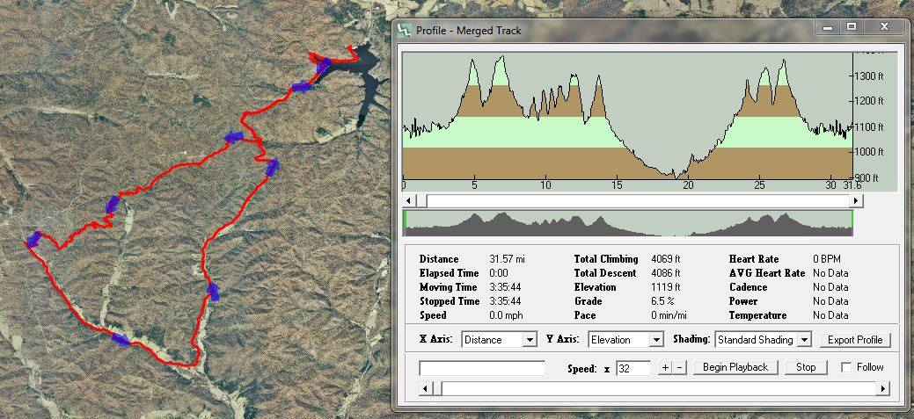

May 13, 2017
A 33 mile race through the Ozark Foothills.
The Pork-Chop is The Squealer's little cousin. It too has single-track and gravel, utilizes the Trace Creek, Middle Fork and Council Bluff Lake sections of the Ozark Trail, but we don't send you out quite as far in banjo land. The race is 33 miles with about 10 miles of gravel. You will race AT THE SAME TIME as the Squealer, on a modified course. There will be one water checkpoint at the end of your ride on the Middle Fork Trail, approximately half way through your race. You are responsible for carrying all food and necessary supplies for you to complete your race. At the end of the race, the top three overall men and women will receive cash, 10% payout based off number of racers of each gender. Awards to top 3 in each category (Men, Women, Single Speed and Masters 40+). Post race meal is available for racers for $5, most likely will consist of BBQ and sides. T shirt are available for an additional charge and are not provided with the race entry, I will order some extras but please order ahead of time if you want one. No t-shirts will be available after 5-1-17 through pre-registration.
Event will be held rain or shine, no refunds. Transfers before May 10th, first 150 racers get in.
The Council Bluff Recreation Area will be open for camping this weekend. Go here to reserve your site.
Like 2 Timing Guys on Facebook to keep up to date on all updated race information: http://www.facebook.com/2tgllc
